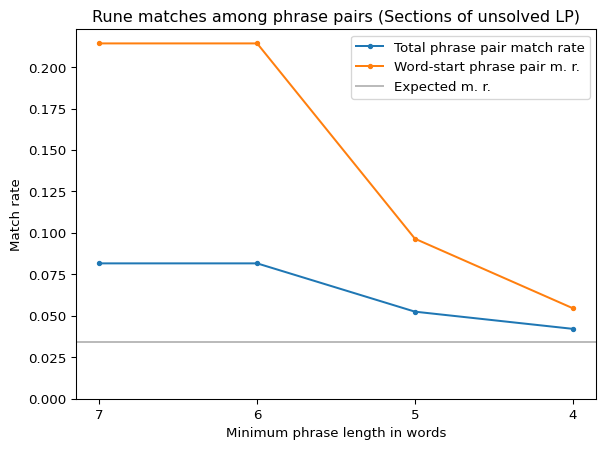
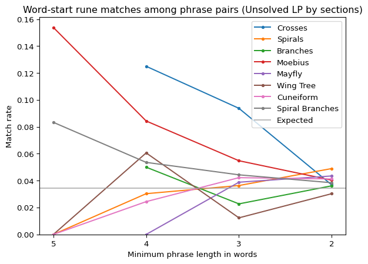

Code
import pandas as pd
import matplotlib.pyplot as plt
import sys
sys.path.append('..')
from cryptext.cicada import liberprimus as lp
from helperfunctions import find_phrase_groups, find_phrase_groups_strict, count_rune_matchesimport pandas as pd
import matplotlib.pyplot as plt
import sys
sys.path.append('..')
from cryptext.cicada import liberprimus as lp
from helperfunctions import find_phrase_groups, find_phrase_groups_strict, count_rune_matchesUnlike the letter distribution, which appears completely random except for low doublets, word lengths in the Liber Primus show some amount of order; in fact, the solved sections and the formatting of the unsolved ones indicate that word boundaries are identical to those in the plaintext. This document attempts to exploit this property (assuming it holds, of course) to better understand the used cipher.
One way to exploit known word boundaries is cribbing, which is very useful and has helped in the past, but here I will do something different - compare “phrase pairs”, i.e. pairs of phrases with words of the same length (or more generally phrase groups, if more than two same-wordlength phrases are found).
Assuming some amount of repetition, phrases with words of the same length are likely to be the same phrase, giving us another view on how the same plaintext may be encrypted. Liber Primus (at least its solved part) also does contain some of the needed repetition, with phrases like “Who are you who wishes to study here” or “You are a [being/law] upon yourself”.
Let us try to find phrase groups in the unsolved sections. Of course, only distinguishing phrases by lengths of their words may lead to a large number of false positives. Therefore it may be a good idea to filter out phrases unlikely to be the same:
To further reduce the dependencies between different phrase pairs, the main variant of the search function also deduplicates (removes) some phrase groups; the best description is the code itself, but in a nutshell, a phrase group is deduplicated if it is fully covered by some larger phrase group with longer phrases.
For now let’s look at the longest phrase groups in the unsolved sections:
# Discovered: 2024-09; yeah that's right, I was sitting on my ass with this for 9 months, unaware of its significance; I even put a note which said that matches seem to be quite common at the start of words but didn't pick the right method to investigate (when the simplest method would have sufficed)
for section in lp.load_unsolved().sections():
for pgroup in find_phrase_groups(section, 7):
print(f'@ {section.name()} (section length {len(section.symbols())} runes):')
for phrase in pgroup:
print(f'"{phrase.content()}"')
print()@ Moebius (section length 1903 runes):
"ᛝᛄᚩ-ᛡᛠᛉ-ᚪᛡᚻ-ᚱᛒᛁ-ᛞᛡᛄᚪᛈᚱᛋ-ᚢᛡ-ᚻᚷ"
"ᚩᛉᛉ-ᛝᛡᛄ-ᛁᚫᛟ-ᛖᛗᚹ-ᛖᛉᚦᛗᚪᛋᛉ-ᛞᚦ-ᛡᚢ"
@ Moebius (section length 1903 runes):
"ᛁᛞᛄ-ᛖᛗᚱ-ᚷᚪᚻᛠᛚᚷᚩ-ᛉᚻ-ᛡᛝ-ᛞᚱᚹᚩᛈᛡ-ᚣᚳᚦ"
"ᛁᚫᛟ-ᛖᛗᚹ-ᛖᛉᚦᛗᚪᛋᛉ-ᛞᚦ-ᛡᚢ-ᛉᛗᚫᛋᚳᛖ-ᚳᚫᛠ"
There are two 7-word pairs, which is okay, although quite a bit less than I expected given the solved sections. Both of the matches are from the Moebius section, which is interesting considering the Spiral Branches section has no pairs of this length and yet is much longer.
Furthermore, despite the matched pairs being technically different, one match of both pairs is the same phrase in the same place (note the word ᛖᛉᚦᛗᚪᛋᛉ), so all four (or three… and a half) phrases from Moebius could contain similar words.
You may have also noticed that one of the pairs matches several runes - 4 out of 26, which is more than four times the expected rate for random text (1 out of 29). Three of those matches are also from the beginning of a word, which may be significant.
Let us now match runes of phrase pairs of potentially shorter lengths (which should result in a larger amount of data). For each matched phrase pair or group, we shall compare their runes and report the fraction of runes that matched, as well as the fraction of runes at the beginning of words that matched.
# Discovered: 2025-05 (beginning of month, maybe 9th?)
data = []
for min_phrase_length in [7, 6, 5, 4]:
pgroups = []
for s in lp.load_unsolved().sections():
pgroups += find_phrase_groups(s, min_phrase_length)
stats = count_rune_matches(pgroups)
a,m,wa,wm = stats.runes, stats.rune_matches, stats.words, stats.word_begin_matches
data.append([
f'{min_phrase_length} words',
stats.pairs,
f'{m}/{a} (= 1/{a/m:.1f})' if m > 0 else f'0/{a}',
f'{wm}/{wa} (= 1/{wa/wm:.1f})' if wm > 0 else f'0/{wa}',
])
pd.DataFrame(data, columns=['Min phrase', 'Phrase pairs', 'Match rate', 'Word-start m.r.'])| Min phrase | Phrase pairs | Match rate | Word-start m.r. | |
|---|---|---|---|---|
| 0 | 7 words | 2 | 4/49 (= 1/12.2) | 3/14 (= 1/4.7) |
| 1 | 6 words | 2 | 4/49 (= 1/12.2) | 3/14 (= 1/4.7) |
| 2 | 5 words | 22 | 22/419 (= 1/19.0) | 11/114 (= 1/10.4) |
| 3 | 4 words | 108 | 77/1827 (= 1/23.7) | 25/458 (= 1/18.3) |
fig_title = 'Rune matches among phrase pairs (Sections of unsolved LP)'
X = [7,6,5,4]
Yall, Yword = [], []
for min_phrase_length in X:
pgroups = []
for s in lp.load_unsolved().sections():
pgroups += find_phrase_groups(s, min_phrase_length)
stats = count_rune_matches(pgroups)
a,m,wa,wm = stats.runes, stats.rune_matches, stats.words, stats.word_begin_matches
Yall.append(m / a)
Yword.append(wm / wa)
fig, ax = plt.subplots()
ax.plot(X, Yall, label='Total phrase pair match rate', marker='.')
ax.plot(X, Yword, label='Word-start phrase pair m. r.', marker='.')
ax.axhline(1/29, color='#999999aa', label='Expected m. r.')
ax.xaxis.set_label_text('Minimum phrase length in words')
ax.invert_xaxis()
ax.set_xticks(X)
ax.yaxis.set_label_text('Match rate')
ax.set_ylim(bottom=0)
ax.legend()
ax.set_title(fig_title)
plt.show()
It is visible from the tables that rune match rate at the first letter of a word is consistently and quite significantly higher than in the rest of the word. This being intentional is not undeniable, it is still technically possible that this was caused by nothing more than random chance, however, the pattern is consistent enough accross many measurements, and even remains (to an extent) when the most pronounced example (the 7 word match from Moebius) is removed. It is also notable that a significant portion of matched phrases or parts of phrases may be false positives, i.e. not actually being the same word, so they only introduce noise into the equation. That the pattern shows despite this, does say something.
This has big implications to the nature of the cipher, as the cipher state seems to depend on the first letters of each word, or on words in general, otherwise such a big correlation between word index and rune match probability would not exist.
Finally, let’s look from a closer perspective, by section:
data = []
for section in lp.load_unsolved().sections():
for min_phrase_length in [5,4,3,2]:
stats = count_rune_matches(find_phrase_groups_strict(section, min_phrase_length))
a,m,wa,wm = stats.runes, stats.rune_matches, stats.words, stats.word_begin_matches
data.append([
section.name().replace('Spiral ', 'Sp. '),
f'{min_phrase_length} words',
stats.pairs,
f'{m}/{a} (= 1/{a/m:.1f})' if m > 0 else f'0/{a}',
f'{wm}/{wa} (= 1/{wa/wm:.1f})' if wm > 0 else f'0/{wa}',
])
pd.DataFrame(data, columns=['Section', 'Min phrase', 'Phrase pairs', 'Match rate', 'Word-start m.r.'])| Section | Min phrase | Phrase pairs | Match rate | Word-start m.r. | |
|---|---|---|---|---|---|
| 0 | Crosses | 5 words | 0 | 0/0 | 0/0 |
| 1 | Crosses | 4 words | 2 | 1/36 (= 1/36.0) | 1/8 (= 1/8.0) |
| 2 | Crosses | 3 words | 11 | 6/149 (= 1/24.8) | 2/33 (= 1/16.5) |
| 3 | Crosses | 2 words | 82 | 32/805 (= 1/25.2) | 4/164 (= 1/41.0) |
| 4 | Spirals | 5 words | 1 | 0/20 | 0/5 |
| 5 | Spirals | 4 words | 9 | 4/153 (= 1/38.2) | 1/36 (= 1/36.0) |
| 6 | Spirals | 3 words | 51 | 24/681 (= 1/28.4) | 6/153 (= 1/25.5) |
| 7 | Spirals | 2 words | 240 | 95/2343 (= 1/24.7) | 25/480 (= 1/19.2) |
| 8 | Branches | 5 words | 0 | 0/0 | 0/0 |
| 9 | Branches | 4 words | 5 | 2/80 (= 1/40.0) | 1/20 (= 1/20.0) |
| 10 | Branches | 3 words | 57 | 22/751 (= 1/34.1) | 5/171 (= 1/34.2) |
| 11 | Branches | 2 words | 399 | 129/3866 (= 1/30.0) | 31/798 (= 1/25.7) |
| 12 | Moebius | 5 words | 9 | 9/169 (= 1/18.8) | 6/45 (= 1/7.5) |
| 13 | Moebius | 4 words | 24 | 16/372 (= 1/23.2) | 7/96 (= 1/13.7) |
| 14 | Moebius | 3 words | 112 | 59/1410 (= 1/23.9) | 17/336 (= 1/19.8) |
| 15 | Moebius | 2 words | 589 | 189/5470 (= 1/28.9) | 43/1178 (= 1/27.4) |
| 16 | Mayfly | 5 words | 0 | 0/0 | 0/0 |
| 17 | Mayfly | 4 words | 4 | 3/67 (= 1/22.3) | 0/16 |
| 18 | Mayfly | 3 words | 34 | 23/461 (= 1/20.0) | 4/102 (= 1/25.5) |
| 19 | Mayfly | 2 words | 197 | 70/1916 (= 1/27.4) | 18/394 (= 1/21.9) |
| 20 | Wing Tree | 5 words | 1 | 0/16 | 0/5 |
| 21 | Wing Tree | 4 words | 9 | 6/143 (= 1/23.8) | 2/36 (= 1/18.0) |
| 22 | Wing Tree | 3 words | 54 | 16/718 (= 1/44.9) | 2/162 (= 1/81.0) |
| 23 | Wing Tree | 2 words | 352 | 103/3410 (= 1/33.1) | 24/704 (= 1/29.3) |
| 24 | Cuneiform | 5 words | 1 | 0/17 | 0/5 |
| 25 | Cuneiform | 4 words | 10 | 6/162 (= 1/27.0) | 1/40 (= 1/40.0) |
| 26 | Cuneiform | 3 words | 95 | 52/1213 (= 1/23.3) | 14/285 (= 1/20.4) |
| 27 | Cuneiform | 2 words | 540 | 183/4959 (= 1/27.1) | 45/1080 (= 1/24.0) |
| 28 | Sp. Branches | 5 words | 12 | 13/225 (= 1/17.3) | 5/60 (= 1/12.0) |
| 29 | Sp. Branches | 4 words | 58 | 41/928 (= 1/22.6) | 13/232 (= 1/17.8) |
| 30 | Sp. Branches | 3 words | 340 | 176/4434 (= 1/25.2) | 42/1020 (= 1/24.3) |
| 31 | Sp. Branches | 2 words | 2007 | 709/19306 (= 1/27.2) | 148/4014 (= 1/27.1) |
fig_title = 'Word-start rune matches among phrase pairs (Unsolved LP by sections)'
X = [5,4,3,2]
fig, ax = plt.subplots()
for section in lp.load_unsolved().sections():
Yword = []
for min_phrase_length in X:
stats = count_rune_matches(find_phrase_groups(section, min_phrase_length))
a,m,wa,wm = stats.runes, stats.rune_matches, stats.words, stats.word_begin_matches
Yword.append(wm / wa if wa > 0 else None)
ax.plot(X, Yword, label=section.name(), marker='.')
ax.axhline(1/29, color='#999999aa', label='Expected')
ax.xaxis.set_label_text('Minimum phrase length in words')
ax.invert_xaxis()
ax.set_xticks(X)
ax.yaxis.set_label_text('Match rate')
ax.set_ylim(bottom=0)
ax.legend()
ax.set_title(fig_title)
plt.show()
From this it’s visible that different sections behave differently. There are several ‘good’ sections (i.e. Crosses, Moebius, and Spiral Branches), where the word-start match rate is noticeably higher than expected (also note that Spiral Branches and Moebius are the longest unsolved sections), and ‘bad’ sections, showing mostly the opposite (at least for larger phrase lengths).
This may not neccessarily indicate that they are encrypted differently (perhaps this lies only with too high false positive rate of phrase pairs), but it might, which may be why solving by section instead of solving everything together may be better, and why the ‘good’ sections are probably a good place to start if we want to find more patterns.
There is also an interesting pattern in that even most ‘bad’ sections seem to have an increasing trend of word-start match rate as minimum phrase length decreases, and the increase is strong enough that in 2-word phrases, the match rate is not only above expectation, but sometimes even be the highest among all sections, which not what one might expect, as with shorter phrases there is likely a lot of noise produced by false positives.
The code should at some point be available for anyone to run for themselves, but for convenience / quick peek, here are all in-section matches of length at least 5:
for section in lp.load_unsolved().sections():# + [ lp.load_unsolved() ]:
print(f'@ {section.name()} (section length {len(section.symbols())} runes):')
for pgroup in find_phrase_groups(section, 5):
for phrase in pgroup:
print(f'"{phrase.content()}"')
print()
print()@ Crosses (section length 729 runes):
@ Spirals (section length 1145 runes):
"ᚳᚣᚳᚫᚾ-ᛏᚦᚷ-ᛁᛄᛁ-ᚳᛞᛡᛉ-ᚻᚫᚫᛠᚷ"
"ᛗᚠᛚᛠᛝ-ᛒᛉᛁ-ᛚᚦᚱ-ᛠᛡᛁᚳ-ᚩᛉᛖᛞᛡ"
@ Branches (section length 1729 runes):
@ Moebius (section length 1903 runes):
"ᚢᚷᛉᛇᛈᛉ-ᚣᛠᛚᚪᛉ-ᛟᛉᛡᚦᚻᛠ-ᚾᚪᚳ-ᚢᚷᚾ"
"ᛝᚹᛋᚱᛁᛝ-ᛒᛁᚪᚫᛚ-ᛏᚱᛡᚫᚠᛞ-ᛝᛄᚩ-ᛡᛠᛉ"
"ᚪᛡᚻ-ᚱᛒᛁ-ᛞᛡᛄᚪᛈᚱᛋ-ᚢᛡ-ᚻᚷ"
"ᛁᛞᛄ-ᛖᛗᚱ-ᚷᚪᚻᛠᛚᚷᚩ-ᛉᚻ-ᛡᛝ"
"ᛁᚫᛟ-ᛖᛗᚹ-ᛖᛉᚦᛗᚪᛋᛉ-ᛞᚦ-ᛡᚢ"
"ᚠᚻ-ᛞᚠᚣᛋᚾᛟ-ᛠᛇᛄ-ᛖᛉ-ᚩᛈᛠᛚᚪ"
"ᛁᛗ-ᛝᛉᚱᛞᛋᛗ-ᚠᚫᚹ-ᛟᛋ-ᚦᛞᛞᛈᛝ"
"ᛝᛄᚩ-ᛡᛠᛉ-ᚪᛡᚻ-ᚱᛒᛁ-ᛞᛡᛄᚪᛈᚱᛋ-ᚢᛡ-ᚻᚷ"
"ᚩᛉᛉ-ᛝᛡᛄ-ᛁᚫᛟ-ᛖᛗᚹ-ᛖᛉᚦᛗᚪᛋᛉ-ᛞᚦ-ᛡᚢ"
"ᛁᛞᛄ-ᛖᛗᚱ-ᚷᚪᚻᛠᛚᚷᚩ-ᛉᚻ-ᛡᛝ-ᛞᚱᚹᚩᛈᛡ-ᚣᚳᚦ"
"ᛁᚫᛟ-ᛖᛗᚹ-ᛖᛉᚦᛗᚪᛋᛉ-ᛞᚦ-ᛡᚢ-ᛉᛗᚫᛋᚳᛖ-ᚳᚫᛠ"
@ Mayfly (section length 1021 runes):
@ Wing Tree (section length 1433 runes):
"ᛡᛒ-ᚪᛏ-ᚹᛏᛈ-ᚹᛠᚩᚱᚩᛖ-ᚣᛚᛋ"
"ᚣᛋ-ᛠᚻ-ᚠᛒᛚ-ᛁᚫᛚᛞᛉᚪ-ᛁᚹᚷ"
@ Cuneiform (section length 1680 runes):
"ᚦᛋ-ᚳᚹᚱᚹ-ᚩᚻᚣ-ᚢᛝᚩ-ᛈᛚᛁᛏᚪ"
"ᛚᚩ-ᚾᛗᛄᛠ-ᚦᛟᛄ-ᚪᚦᚹ-ᛡᚾᛖᛠᛈ"
@ Spiral Branches (section length 3316 runes):
"ᛚᛋ-ᛒᛞᛄ-ᛁᛝᚣᛖᚳ-ᛄᚻᛚᚣ-ᚷᚫᛚᛞ"
"ᚻᛈ-ᛇᛈᛖ-ᛚᛄᚩᛡᚪ-ᛖᛋᚫᚩ-ᛠᛉᛝᚣ"
"ᚠᛞᚱᛠᚷ-ᛈᚩᛇᚩᛗᛠᛒ-ᛄᛡ-ᛋᛗᚠ-ᛏᚠᚫᚩ"
"ᛠᛉᚣᛇᚱ-ᚩᛈᛋᚳᚫᛗᛇ-ᚾᛄ-ᛖᚠᛋ-ᛖᚠᚪᛝ"
"ᚪᚾ-ᛞᛄᚷ-ᛟᛟᚳᛏᛄᛞ-ᛉᚾᛗᚦ-ᛁᛄᚱ"
"ᛇᛈ-ᚩᛚᛞ-ᛚᚹᚳᛄᚹᛉ-ᚪᛡᚹᛇ-ᛖᛖᚹ"
"ᛄᛈᛄ-ᛏᚠᛉ-ᚪᛄ-ᛁᚠᛉᚢᚩᚣᚻᚦ-ᚻᚾᛁᛒ"
"ᚩᚾᚪ-ᚱᛠᚷ-ᛗᚢ-ᛗᛁᛄᛒᛗᚱᚾᛗ-ᚩᚾᚠᚣ"
"ᚩᛚᛞ-ᛚᚹᚳᛄᚹᛉ-ᚪᛡᚹᛇ-ᛖᛖᚹ-ᛏᚪ"
"ᛖᛋᛞ-ᛚᚳᛒᛞᛏᛈ-ᛖᚾᛈᚣ-ᚱᚠᚻ-ᚫᛝ"
"ᛋᛁᚹᛝᛈ-ᛗᛉᛄᛈ-ᛞᛗᛝ-ᛇᛚᛞᚣ-ᚠᚩᛞ"
"ᛠᛋᚩᛇᛏ-ᛝᛚᚷᛞ-ᛒᛈᛈ-ᛗᛁᚪᛖ-ᛚᛏᛁ"
"ᛖᛗᚩ-ᛉᚹᚦᛠ-ᛁᚦᛒᛖᚱ-ᛟᚳᛉ-ᛈᛖ"
"ᚻᚦᚱ-ᚦᚣᛚᛉ-ᛠᛈᚫᚠᚪ-ᚫᚪᛒ-ᛈᛋ"
"ᛁᚦᛒᛖᚱ-ᛟᚳᛉ-ᛈᛖ-ᛁᚢᚦ-ᛈᚠᛞᛈᛄ"
"ᚫᛈᚫᚷᚩ-ᛗᛁᚪ-ᛖᚩ-ᛏᚹᚩ-ᚠᚣᚢᛏᛄ"
"ᚦᛞ-ᛁᚫᚩᚾ-ᛋᚷᛈᚪᛖᚩ-ᚣᚦᚹ-ᚾᚷ"
"ᚻᛠ-ᛞᚩᛄᚷ-ᛋᚩᛠᚳᛖᛋ-ᚣᛖᚫ-ᛈᚦ"
"ᛒᛈᛈ-ᛗᛁᚪᛖ-ᛚᛏᛁ-ᚫᛄᛖ-ᛒᚾᚠᚪᛋᚷᛒᚠ"
"ᛒᛡᚫ-ᛇᚹᛗᚢ-ᚪᛈᛡ-ᛈᛁᛄ-ᚪᚢᚾᛠᛖᛞᛗᚪ"
"ᛋᛇᚫᛇᛝᚱ-ᛚᛇᛠ-ᛏᚩᛄ-ᚩᛝᛈ-ᚱᚻᛠᚢᛉᚦ"
"ᛒᛝᚦᛝᛠᚠ-ᛇᛗᛟ-ᚩᛠᛈ-ᛁᛡᚱ-ᚹᚹᛟᚩᛒᚩ"
"ᛖᛄ-ᚠᛚᛟ-ᛁᚳ-ᛁᛝᚷᚦ-ᛗᛋᚫᚷᚪᛠ"
"ᛠᛒ-ᚣᛚᚩ-ᛇᛉ-ᚩᚷᛗᚩ-ᚠᛚᛟᛝᚦᛠ"
Finally, to ease my mind and not feel that this is just not just a “the paranoid schizophrenic has found a pattern in the numbers” moment, I did some statistical testing to see how rare would some of the measurements be; e.g. compare the gathered data to data gathered from randomly distributed runes (with low doublets) and see in which percentile the gathered data is, where a good result is one at least in the top 5%. The results are sufficient, and quite satisfying.
def measure_wordstart_match_rate(sections, phraselen):
pgroups = []
for s in sections:
pgroups += find_phrase_groups(s, phraselen)
stats = count_rune_matches(pgroups)
return stats.word_begin_matches / stats.words
sections = lp.load_unsolved().sections()
target_mr_7 = measure_wordstart_match_rate(sections, 7) - 0.001
target_mr_5 = measure_wordstart_match_rate(sections, 5) - 0.001
total = 1000
counter7 = 0
counter5 = 0
for progress in range(total):
sections = lp.load_fake_unsolved().sections()
match_rate = measure_wordstart_match_rate(sections, 7)
if match_rate >= target_mr_7: counter7 += 1
match_rate = measure_wordstart_match_rate(sections, 5)
if match_rate >= target_mr_5: counter5 += 1
# print(f'Progress: {progress}/{total}', end='\r')
print(f'Word-start m.r. for phrases >= 7 words is in the top {100 * counter7/total:.1f}%.')
print(f'Word-start m.r. for phrases >= 5 words is in the top {100 * counter5/total:.1f}%.')Word-start m.r. for phrases >= 7 words is in the top 0.7%.
Word-start m.r. for phrases >= 5 words is in the top 0.4%.